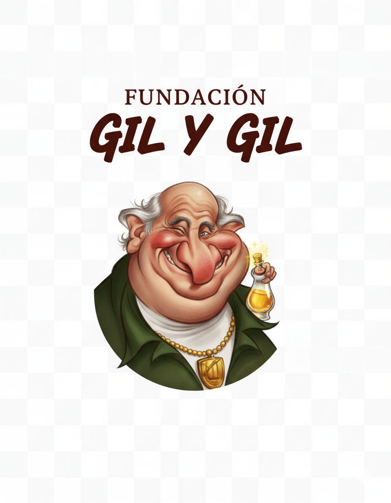
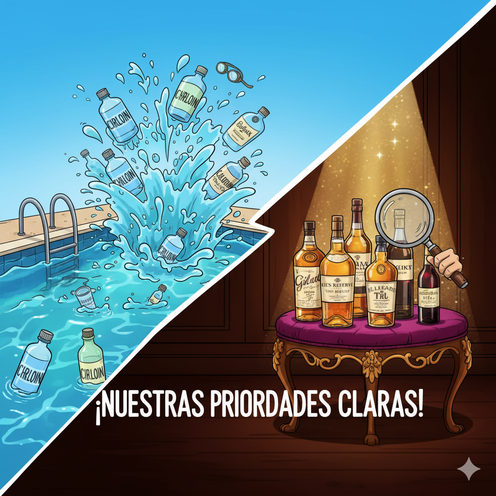

Fundación Gil y Gil

Apoyamos causas realmente 'serias'
- Recaudar fondos para comprar cloro para la piscina de la mansión.
- Recaudar fondos para adquirir bebidas alcohólicas de calidad (que no sean de marca blanca).
¡Únete a la causa y ayuda a que la Fundación Gil y Gil siga manteniendo los más altos estándares en piscinas y bebidas!
Cualquier colaboración es bienvenida.
Formas de colaborar:
- Donar dinero.
- Traer garrafas de cloro.
- Donar botellas de buen vino o whisky de calidad.

Haz tu donación aquí (o busca chollos de cloro y whisky en internet)